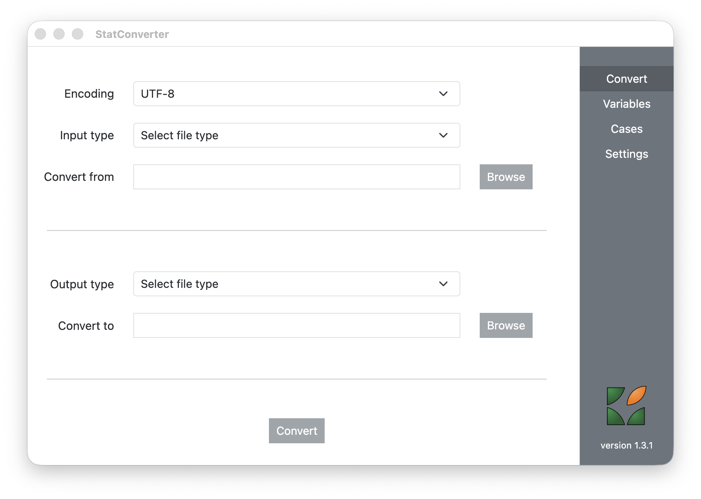
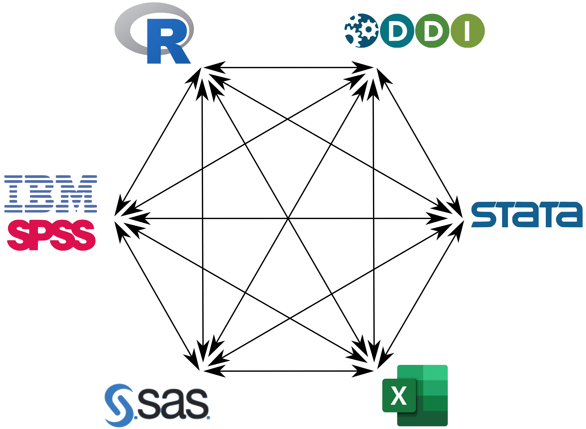

StatConverter
StatConverter v1.1.1 (by RODA) is a tool to convert to and from various statistical software formats: R, SPSS, Stata, SAS (even Excel) and DDI Codebook.

The actual conversion is done using the R environment. StatConverter is a graphical user interface on top of R, using Node.js and Electron that help building cross-platform desktop applications using HTML, CSS, and JavaScript. It is available in multiple formats, depending on the operating system: apart from the GitHub source files, platform specific binaries and installers are also available.

Contact: roda[at]roda.ro
For issues and bug reports, please use the GitHub issues page.